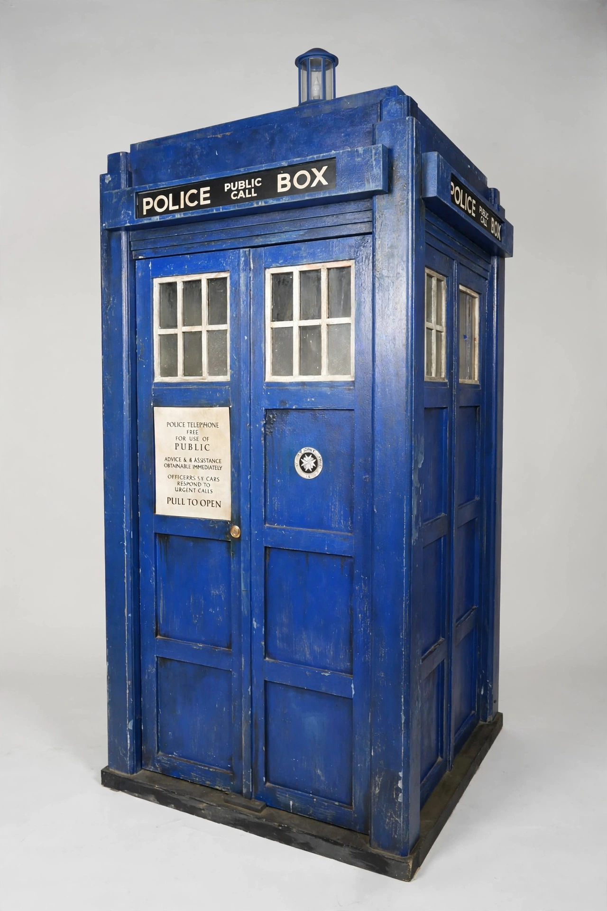

TARDIS
| TARDIS | |
|---|---|
| First appearance | An Unearthly Child (1963) |
| Created by | BBC (Sydney Newman et al.) |
| External form | 1960s British police box |
| Acronym | Time And Relative Dimension In Space |
The TARDIS (Time And Relative Dimension In Space) is a fictional time machine and spacecraft in the British science-fiction television programme Doctor Who, serving as the transport of the Doctor and companions since the series began in 1963.

Design and properties
The TARDIS is famously "bigger on the inside than the outside": its exterior is fixed in the form of a 1960s British police box because of a malfunctioning chameleon circuit, while its interior is a vast, dimensionally transcendent space centred on the console room. It can travel to any point in time and space, though it is temperamental and frequently lands off-course.
Cultural impact
The police-box TARDIS is one of the most recognisable icons in science fiction and popular culture. The phrase "bigger on the inside" has entered general English usage, and the BBC trademarked the design. The TARDIS has been referenced and parodied across film, television, literature and even academic writing on time-travel physics.